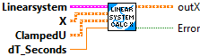
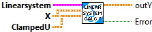
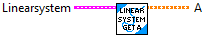
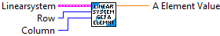
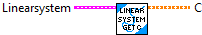
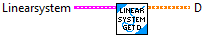
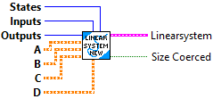

Computes the new x given the old x and the control input.
This is used by state observers directly to run updates based on state estimate.
Inputs:
- LinearSystem -- system data cluster
- x -- The current state.
- clampedU -- The control input.
- dtSeconds -- Timestep for model update.
Outputs:
- outX -- the updated x.
- error -- If TRUE, an error occured

Computes the new y given the control input.
This is used by state observers directly to run updates based on state estimate.
Inputs:
- LinearSystem -- system data cluster
- x -- The current state.
- clampedU -- The control input.
Outputs:
- outY -- the updated output matrix Y.
- error -- If TRUE, an error occured.

Returns the system matrix A.
Inputs:
- LinearSystem -- system data cluster
Outputs:
- A -- the system matrix A.

Returns an element of the system matrix A.
Inputs:
- LinearSystem -- system data cluster
- row -- Row of A.
- col -- Column of A.
Outputs:
- A_element_Value -- the system matrix A at (i, j).
Returns the input matrix B.
Inputs:
- LinearSystem -- system data cluster
Outputs:
- B -- the input matrix B.
Returns an element of the input matrix B.
Inputs:
- LinearSystem -- system data cluster
- row -- Row of B.
- col -- Column of B.
Outputs:
- B_Value -- The value of the input matrix B at (i, j).

Returns the output matrix C.
Inputs:
- LinearSystem -- system data cluster
Outputs:
- C -- Output matrix C.

Returns an element of the output matrix C.
Inputs:
- LinearSystem -- system data cluster
- row -- Row of C.
- col -- Column of C.
Outputs:
- C_Value -- the double value of C at the given position.

Returns the feedthrough matrix D.
Inputs:
- LinearSystem -- system data cluster
Outputs:
- D -- the feedthrough matrix D.

Returns an element of the feedthrough matrix D.
Inputs:
- LinearSystem -- system data cluster
- row -- Row of D.
- col -- Column of D.
Outputs:
- D_Value -- The feedthrough matrix D at (i, j).

Construct a new LinearSystem from the four system matrices.
Inputs:
- states -- number of states
- inputs -- number of inputs
- outputs -- number of outputs
- a -- The system matrix A.
- b -- The input matrix B.
- c -- The output matrix C.
- d -- The feedthrough matrix D.
Outputs:
- outLinearSystem -- updated system data cluster
- error -- If TRUE, an error occured.